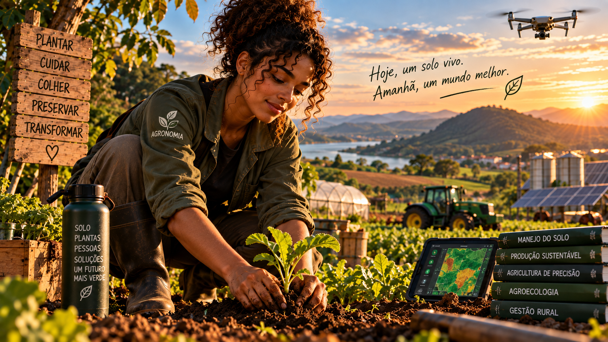

Aprenda a cultivar comida onde você mora — do primeiro vaso ao primeiro ciclo de colheita, com solo vivo, água consciente e rotina possível.
6 módulos24 aulasProjeto de 30 dias
0 de 24 aulas concluídas
Uma horta começa com observação, não com tamanho
Este curso foi desenhado para quem tem quintal, varanda, corredor, laje ou apenas alguns recipientes. Você vai aprender a tomar decisões simples sobre luz, solo, água, espécies, manutenção, colheita e continuidade.

01
Começar pequeno
Transforme luz, espaço e rotina em um primeiro canteiro possível.
Aula 01
Leia o seu espaço
Antes de comprar sementes, observe horas de sol, vento, acesso à água e circulação. Hortaliças de fruto geralmente pedem mais sol; folhas toleram condições intermediárias.
Atividade prática
Mapeie durante um dia onde bate sol e anote 3 locais possíveis.
Aula 02
Escolha recipientes e canteiros
Vasos precisam de drenagem e volume compatível com as raízes. Canteiros facilitam diversidade, mas exigem planejamento de acesso e solo.
Atividade prática
Escolha entre vaso, jardineira ou canteiro e justifique em uma frase.
Aula 03
Monte um kit mínimo
Pá pequena, regador, recipiente drenante, substrato e matéria orgânica resolvem o início. Ferramenta cara não substitui observação.
Atividade prática
Liste o que você já tem e o que realmente precisa conseguir.
Aula 04
Defina uma rotina realista
Uma horta cresce com constância. Cinco a dez minutos de observação frequente valem mais que uma grande intervenção ocasional.
Atividade prática
Reserve dois horários fixos da semana para cuidar da horta.
Ferramenta do módulo — registre decisões no seu Diário da Horta e compare observações ao longo do ciclo.
02
Solo que alimenta
Entenda estrutura, matéria orgânica, drenagem e vida do solo.
Aula 05
Solo não é só terra
Um bom meio de cultivo combina minerais, matéria orgânica, água, ar e organismos. Compactação reduz oxigênio e dificulta raízes.
Atividade prática
Pegue um punhado úmido de solo e observe textura, cheiro e compactação.
Aula 06
Substrato e drenagem
Em recipientes, o excesso de água precisa sair. Misturas muito densas encharcam; misturas leves demais secam rápido.
Atividade prática
Verifique se seus vasos possuem furos livres e caminho para a água escoar.
Aula 07
Composto e matéria orgânica
Composto maduro devolve nutrientes e melhora retenção de água. Resíduo fresco em excesso pode desequilibrar o cultivo.
Atividade prática
Separe resíduos vegetais adequados para iniciar ou alimentar uma composteira.
Aula 08
Cobertura do solo
Folhas secas e palhada reduzem evaporação, amortecem temperatura e protegem a superfície contra impacto da chuva.
Atividade prática
Cubra uma pequena área do solo e compare a umidade com uma área descoberta.
Ferramenta do módulo — registre decisões no seu Diário da Horta e compare observações ao longo do ciclo.
03
Sementes, mudas e plantio
Faça escolhas simples e aumente a chance de pegamento.
Aula 09
O que plantar primeiro
Folhas, temperos e algumas raízes oferecem ciclos acessíveis. A escolha deve considerar clima, estação, espaço e consumo da casa.
Atividade prática
Escolha 3 culturas que você realmente comeria.
Aula 10
Semente ou muda?
Sementes custam menos e ensinam o ciclo completo; mudas antecipam etapas e facilitam o começo. Algumas espécies preferem semeadura direta.
Atividade prática
Para cada cultura escolhida, decida: semente ou muda.
Aula 11
Profundidade e espaçamento
Sementes pequenas geralmente exigem cobertura rasa. Espaço insuficiente aumenta competição por luz, água e nutrientes.
Atividade prática
Leia a embalagem de uma semente e registre profundidade e espaçamento indicados.
Aula 12
Transplante sem trauma
Mudas devem ser retiradas com torrão preservado, plantadas na mesma profundidade e irrigadas logo após o transplante.
Atividade prática
Simule o local de transplante e deixe água pronta antes de mexer na muda.
Ferramenta do módulo — registre decisões no seu Diário da Horta e compare observações ao longo do ciclo.
04
Água, luz e manutenção
Aprenda a observar a planta antes de reagir.
Aula 13
Regar pelo solo, não pelo relógio
A necessidade varia com calor, vento, vaso e fase da planta. Toque o solo antes de regar e evite encharcamento permanente.
Atividade prática
Teste a umidade com o dedo em dois horários diferentes.
Aula 14
Luz e sinais da planta
Alongamento excessivo pode indicar pouca luz; queimaduras podem surgir após exposição abrupta. Mudanças devem ser graduais.
Atividade prática
Fotografe a planta por uma semana e compare postura e cor.
Aula 15
Nutrição com equilíbrio
Crescimento depende de nutrientes, mas excesso de adubo também prejudica. Compostagem e adubação devem respeitar dose e estágio.
Atividade prática
Registre quando e o que foi adicionado ao solo para evitar adubação por impulso.
Aula 16
Pragas: observar antes de combater
Insetos não são automaticamente inimigos. Identifique o dano, intensidade e organismo antes de intervir; diversidade ajuda no equilíbrio.
Atividade prática
Observe frente e verso de cinco folhas e registre o que encontrar.
Ferramenta do módulo — registre decisões no seu Diário da Horta e compare observações ao longo do ciclo.
05
Colher, replantar e aproveitar
Transforme produção pequena em hábito contínuo.
Aula 17
Hora da colheita
Folhas podem ser colhidas gradualmente; frutos e raízes têm sinais próprios. Colher no ponto melhora qualidade e estimula alguns cultivos.
Atividade prática
Defina um sinal de colheita para cada uma das suas 3 culturas.
Aula 18
Colheita sem desperdício
Planejar uso, armazenamento e quantidade plantada reduz perdas. Talos e folhas comestíveis podem ampliar aproveitamento.
Atividade prática
Planeje uma refeição usando integralmente um alimento da horta.
Aula 19
Replantio e sucessão
Semear em pequenos intervalos evita que tudo fique pronto ao mesmo tempo. O canteiro pode alternar famílias e ciclos.
Atividade prática
Crie um calendário simples de 4 semanas para novos plantios.
Aula 20
Guardar aprendizados
Data de plantio, clima, rega e resultado formam um diário útil. A horta melhora quando decisões deixam de depender só da memória.
Atividade prática
Abra um diário com data, cultura, ação e observação.
Ferramenta do módulo — registre decisões no seu Diário da Horta e compare observações ao longo do ciclo.
06
Sua horta de 30 dias
Organize conhecimento em um primeiro ciclo mensurável.
Aula 21
Desenhe o sistema
Local, recipientes, água, culturas e rotina precisam funcionar juntos. Um desenho simples revela conflitos antes do plantio.
Atividade prática
Faça um croqui da sua horta com sol, água e circulação.
Aula 22
Planeje custos e reaproveitamento
Começar barato é possível com recipientes seguros reaproveitados, composto e troca de mudas. Priorize função, não aparência.
Atividade prática
Monte um orçamento com três colunas: tenho, consigo reutilizar, preciso comprar.
Aula 23
Crie indicadores simples
Sobrevivência das mudas, número de colheitas, gasto, resíduos compostados e frequência de cuidado ajudam a medir evolução.
Atividade prática
Escolha 3 indicadores para acompanhar por 30 dias.
Aula 24
Compartilhe e multiplique
Trocar sementes, mudas e conhecimento fortalece autonomia e comunidade. Uma pequena horta pode virar laboratório de alimentação e território.
Atividade prática
Defina uma pessoa ou grupo com quem você compartilhará uma muda ou aprendizado.
Ferramenta do módulo — registre decisões no seu Diário da Horta e compare observações ao longo do ciclo.
Projeto final — Minha Horta de 30 Dias
Preencha seu Acesso Beta. Ele fica salvo neste navegador e pode ser impresso em uma versão limpa.